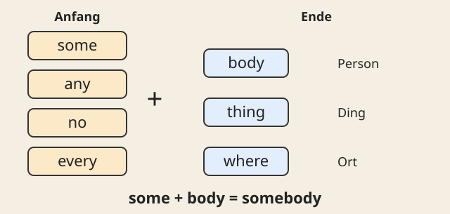

Etiketten ohne Nomen: somebody, anything, nowhere
Mit einem KI-Tutor lernen
Ein KI-Tutor erklärt dir diese Seite und hilft dir bei den Aufgaben. Wähl deinen Assistenten:
Mit Claude öffnen Mit ChatGPT öffnen Mit Mistral Vibe öffnen
Du nutzt dein eigenes Konto beim Anbieter. Der Assistent ist kein Angebot von lernapps.net: lernapps liefert nur Inhalte und Aufgaben. Die Wahl gilt für alle Seiten, nur auf diesem Gerät.
Wo ist die Liste?

Von links: Amir (Brille) und Sophie (Zöpfe). Sie suchen die Liste von Mrs Parker.
Quelle: eigene Zeichnung. Lizenz: CC-BY-4.0.Mrs Parkers Liste ist weg. Amir sagt: „Somebody has the list.“ Hinter somebody steht kein Nomen. Das Wort sagt schon, dass es um eine Person geht.
Das kannst du danach: Du benutzt Wörter wie somebody, anything, nobody und everywhere richtig.
| Wort | Bedeutung |
|---|---|
| somebody | jemand |
| something | etwas |
| nothing | nichts |
| everybody | alle, jeder |
| everything | alles |
| everywhere | überall |
| list | Liste |
Aufgabe
Lösung
irgendjemand, aber Amir weiß nicht, wer richtige Antwort
somebody heißt „jemand“. Amir weiß nicht, wer es ist. Darum sagt er nur somebody.
niemand
„Niemand“ heißt auf Englisch nobody. Hier hat aber jemand die Liste.
alle
„Alle“ ist everybody. Amir meint eine einzelne Person, die er nicht kennt.
somebody ist ein Etikett ohne Nomen. Es steht für eine Person, die man nicht nennt.
Mehr dazu: Lernlandkarte Englisch · Zusammensetzungen mit some und any
Anfang plus Ende ergibt ein Etikett ohne Nomen
Du setzt einen Anfang (some, any, no, every) mit einem Ende (body, thing, where) zusammen. body meint eine Person, thing ein Ding und where einen Ort. Für den Anfang gelten dieselben Regeln wie vorher: some in Aussagen, any in Fragen und Verneinungen.

Ein Anfang und ein Ende ergeben ein Wort.
Quelle: eigene Zeichnung. Lizenz: CC-BY-4.0.| Anfang | Wörter |
|---|---|
| some | somebody · something · somewhere |
| every | everybody · everything · everywhere |
Merke
any und no funktionieren genauso. nobody, nothing und nowhere verneinen schon selbst, darum steht dabei kein not: Nobody has a key, nicht „Nobody hasn't got a key“. Nach somebody, nobody und everybody steht das Verb in der Einzahl (has, is): Everybody has a cap.
Übung
Aufgabe
Wähle das richtige Wort.
Tipp
Aussage, Frage oder Verneinung? Danach wählst du den Anfang. body, thing oder where sagt dir, ob es um eine Person, ein Ding oder einen Ort geht.
- Hat jemand die Liste? → Has … got the list?
- Peter hat etwas in der Tasche. → Peter has … in the bag.
- Ellie hat nichts. → Ellie hasn't got ….
- Niemand ist im Lagerraum. → … is in the storeroom.
Lösung
- Has anybody got the list?
- Peter has something in the bag.
- Ellie hasn't got anything.
- Nobody is in the storeroom.
Aufgabe
Lösung
Richtige Antwort: jemand (in einer Aussage) – somebody; irgendetwas (in einer Frage) – anything; niemand – nobody; überall – everywhere
some steht in Aussagen, any in Fragen, no verneint, every heißt „jeder“ oder „alle“.
Mehr dazu: Lernlandkarte Englisch · Zusammensetzungen mit some und any
Aufgabe
Ergänze das Wort.
Tipp
Setze die beiden Teile zu einem Wort zusammen.
| Teile | Wort |
|---|---|
| any + thing | … |
| no + body | … |
| no + where | … |
| any + body | … |
Lösung
- any + thing · anything
- no + body · nobody
- no + where · nowhere
- any + body · anybody
Aufgabe
Schreibe den Satz auf Englisch.
Tipp
Aussage, Frage oder Verneinung? Danach Anfang und Ende. Das Verb steht in der Einzahl.
- Niemand hat die Liste.
- Peter hat nichts.
- Hast du irgendetwas?
- Alle haben einen Stift.
Lösung
- Nobody has the list. (auch richtig: No one has the list.; Nobody has got the list.)
- Peter has nothing. (auch richtig: Peter hasn't got anything.)
- Have you got anything? (auch richtig: Do you have anything?)
- Everybody has a pen. (auch richtig: Everyone has a pen.)
Aufgabe
Lösung
Richtige Antwort: Die Aussage stimmt nicht.
nobody verneint schon. Es heißt Nobody has the list, ohne not.
Mehr dazu: Lernlandkarte Englisch · Zusammensetzungen mit some und any
Aufgabe
Hör zu und schreibe den ganzen Satz auf.
Tipp
Hör genau auf den Anfang des Wortes. Ist es some, any, no oder every?
- KI
- KI
- KI
Lösung
- Is anybody here?
- Nobody is in the room.
- Mr Hill has something for you.
Selbst sagen und suchen
Aufgabe
Hör zu, sprich nach und nimm dich auf. Vergleiche dann mit dem Original.
Tipp
Hör den Satz zuerst. Sprich dann langsam nach und achte auf die Betonung am Anfang des Wortes.
- Everybody is in the storeroom.KI
- Have you got anything in the bag?KI
- The list is somewhere in the storeroom.KI
Zum Aufnehmen braucht diese Aufgabe JavaScript. Die Beispiele kannst du auch ohne anhören.
Lösung
- Everybody is in the storeroom.
- Have you got anything in the bag?
- The list is somewhere in the storeroom.
Offene Aufgabe
Die Klasse sucht die Liste. Schreibe zwei Sätze mit Wörtern wie somebody, nobody, everywhere oder nothing (zum Beispiel: Nobody has the list. Nothing is in the box.).
Eine gute Antwort enthält:
Lösung
Somebody has the list. Nothing is in the box.
Rückblick auf Kapitel 2
Die Gläser und Kisten sind beschriftet: many für Kisten, much für Gläser, a cup of macht aus dem Glas etwas Zählbares, some und any wechseln mit dem Satz und somebody braucht kein Nomen. Mrs Parkers Liste ist wieder da. Jetzt muss alles an seinen Platz im Regal. Im nächsten Kapitel wiederholst du kurz be, Wochentage, Monate, Datum und Uhrzeiten. Dann stellst du die Kisten in den Lagerraum und füllst den Schulkalender.